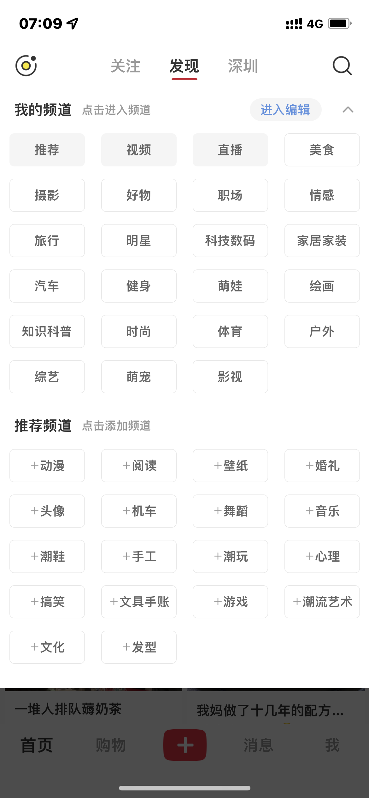

古时候信息匮乏，我们把有知识的人比作学富五车，倒不一定是说这个人肚子里有好几车的书，而是因为当时的书是由竹简制成的，达到五车的藏书量，说明是饱学之士，形容这个人知识渊博。那个时候文字是奢饰品，所以古人是惜字如金，如无必要是不会轻易将文字书面化。反观现在，到处都是文字，但真正饱含智慧的知识却太少。为何？因为信噪比太高，我们真正用到时候才会面对这样或那样的尴尬。
信息找不到
现在市面上五花八门的社区越来越多，下载了很多的 App，但当我们真正想用的时候，却又忘了它们的存在，比如你需要学摄影，可能一开始关注了很多的 up 主和达人，但真到你要学某个具体的知识点的时候，大概率不是从你关注的 up 主里面搜，而是选择从浏览器搜索，比如如何学习构图，然后关注更多的达人。
信息找不准
人人可以发声的时代，加速了信息传播的效率，但同时也让噪音成几何倍数增长，在学习具体的知识时，我们怎敢断定当下看到的信息是准确的？要知道，错误的信息其实比残缺的信息危害更大，因为后者会乘零点几，而前者是以负号开头。

信息过载
出现以上的问题，一方面是信息量过大，另外一方面是人类在信息时代的脱节，人脑的进化速度赶不上信息时代的迭代速度。我们现在所研发的效率工具，都是在解决海量数据的高效性和便捷性问题，但想要达到完全游刃有余地使用这些数据，依然还需要更多的时间探索。
缺乏管理信息的意识
信息找不到、找不准的另外一个重要原因是我们大多数人，都缺乏信息管理的意识。信息如果不经由整理和管理，就只是一段数据，比如躺在你收藏夹的那些所谓干货，除了占用你的空间别无它用。
主动 pull
未经审视过得人生，是不值得过的 ——— 苏格拉底
要想获得优质的信息，我们就得主动出击，依靠算法推荐获得知识，不是说不行，但效率太低。要想获得快速成长，与其被动吸收，不如采用主动订阅的形式。这里推荐使用 RSS 管理你的订阅信息，RSS 是一种简易的资讯聚合器，是一种在现在看来略显古老的工具，但面对信息过载，我又觉得它非常恰到好处。
比如我比较关注影视和美食领域，那么我可以将我在 b站、微信公众号、小红书、个人博客等平台达人汇总到一起，之后如果他们有推送，我可以只查看他们的新动态，自由订阅这些垂类信息的好处在于，可以不再受算法的控制，降低噪音的比率以提高信息使用效率。
PS: 因为还在探索阶段，等晚点有一心心得体会，再分享出来。
管理 push
推荐流本来是一个很好的东西，因为人有时候并不了解自己。比如听音乐的时候，你自认为自己只喜欢民谣、流行类的国语歌曲，偶然间算法给你推荐了爵士类的歌曲，结果你爱到不行。这里面推荐算法中的惊喜度就起了关键性的作用。
但奈何现在的 App 都背离了初心，一心想抢占用户的停留时长。仅凭推荐算法，获得的快乐远比有用多。既然它们靠不住，我们也没办法完全舍弃他们，打不过就驯化它们吧？以小红书为例，我们可以善用 App 自带的标签类，尝试在大类下看内容，会比全类目精准很多。另外在自己不想关注或看到的笔记下长按不感兴趣反馈，也会矫正后续的算法推送。

以上就是我面对信息过载及管理的一些思考，希望对你有所启发！